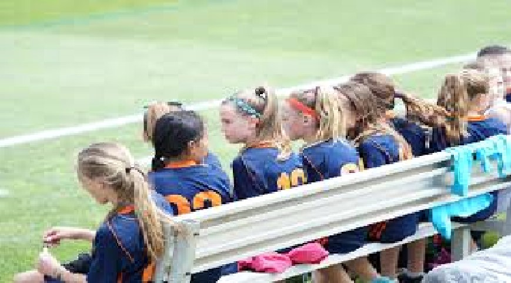

my personality
my name is Ugwo Faith Tega, am the only girl of my family. I will turn eighteen on the last day of october, as a girl i have series of insecurity and phobia for sometimes. I finished my high school education early last year but due to the effect covid-19 had on nigeria system of education, i still have to stay at home for 3 month before my university is set to recieve me.
my education

i started my education at the age of three, with creche as my steping stone, as times goes on i found myself in the nusery department, from there to the primary department after spendiong five good years at the fundamentals primary school, i graduated and got admitted into the secondary section of the school. after six years am finally out of secondary school school aspiring to be in university soon.
my hobbies
Organising events in the community Being involved with charities Volunteering at local companies, clubs and organisations Participating in fundraising events Participating in campaigns Joining social, environmental or animal rights groups
best dishes
Chicken & Veggie Pan Roast. Pesto Zoodles with Chicken, Tomatoes & Pine Nuts. Berry, Goat Cheese, & Quinoa Salad. Chicken & Veggie Teriyaki Stir-Fry. Chicken Fajita Salad. Grilled Steak with Roasted Asparagus & Brown Rice. Caprese Entree Salad with Whole-Grain Pita.
best music
STAY (with Justin Bieber)The Kid LAROI, Justin Bieber. Take My BreathThe Weeknd. INDUSTRY BABY (feat. Jack Harlow)Lil Nas X, Jack Harlow. Bad HabitsEd Sheeran. Happier Than EverBillie Eilish. Kiss Me More (feat. SZA)Doja Cat, SZA. Beggin'Måneskin. good 4 uOlivia Rodrigo.